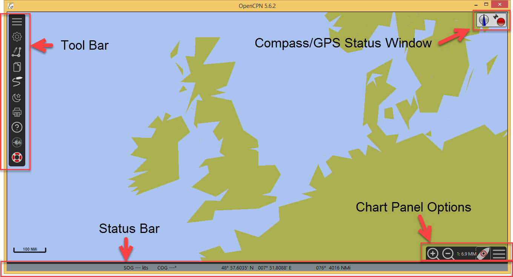

Home Screen
You may have chosen to start OpenCPN at the end of the installation. If not start the program now. You will be presented with a screen like this:

Control areas are displayed on the screen. Many of the options will be explained later. The focus in this manual will be the options needed for basic use.

-
Tool Bar
Hamburger  Clicking on the tool bar 'hamburger' symbol makes the tool bar contract/expand.
Clicking on the tool bar 'hamburger' symbol makes the tool bar contract/expand.
-
Chart Panel Options
Hamburger  The chart panel 'hamburger' opens/closes the panel to display a number of options.
The chart panel 'hamburger' opens/closes the panel to display a number of options.
-
Compass/GPS Status Window
-
Status Bar